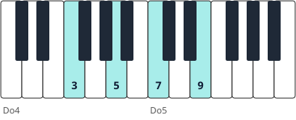

Módulo 11: Armonía avanzada: séptimas, tensiones y voicings
El lenguaje del jazz y de la música moderna.
Piano · Nivel avanzado · Módulo 11 de 14
Acordes de cuatro notas
| Tipo | Fórmula | En Do | Cifrado |
|---|---|---|---|
| Séptima mayor | 1 – 3 – 5 – 7 | Do–Mi–Sol–Si | Cmaj7 / CΔ |
| Séptima de dominante | 1 – 3 – 5 – ♭7 | Do–Mi–Sol–Si♭ | C7 |
| Menor séptima | 1 – ♭3 – 5 – ♭7 | Do–Mi♭–Sol–Si♭ | Cm7 |
| Semidisminuido | 1 – ♭3 – ♭5 – ♭7 | Do–Mi♭–Sol♭–Si♭ | Cm7♭5 / Cø |
| Disminuido | 1 – ♭3 – ♭5 – ♭♭7 | Do–Mi♭–Sol♭–Si♭♭ (La) | C°7 |
1. Tensiones
Por encima de la 7.ª se añaden tensiones: 9.ª, 11.ª y 13.ª (las notas 2, 4 y 6 una octava más arriba). Dan el color «moderno» a los acordes.
2. Voicings sin fundamental (rootless)
En un grupo, el bajista toca la fundamental; el pianista toca 3.ª, 7.ª y tensiones. Así el acorde suena lleno y las manos casi no se mueven.

Dm7 sin fundamental: Fa–La–Do–Mi (3.ª, 5.ª, 7.ª y 9.ª). Para pasar a G7 solo baja el Do a Si.
🎼 ii–V–I con voicings sin fundamental
La mano derecha toca 3.ª, 5.ª, 7.ª y 9.ª (o 7.ª, 9.ª, 3.ª y 13.ª en el V7); la izquierda, la fundamental. Casi no se mueven los dedos entre acordes.
- 🎹 La 3.ª y la 7.ª definen el acorde (shell voicing): con solo esas dos notas ya se reconoce.
- 🎹 En el ii–V–I, la 7.ª de cada acorde baja por grado y se convierte en la 3.ª del siguiente.
- 🎹 Practica el ii–V–I en las 12 tonalidades siguiendo el círculo de quintas.
🧩 ¿Qué notas forman Cmaj7?
🧩 ¿Qué dos notas definen mejor un acorde de séptima?
Resumen: cinco tipos de séptima, tensiones y voicings que conectan las voces de forma suave.